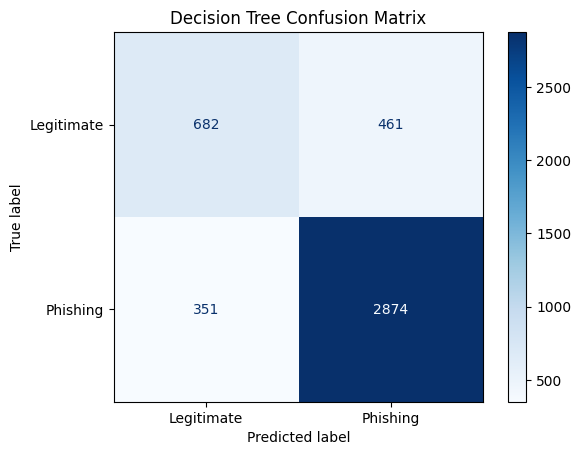
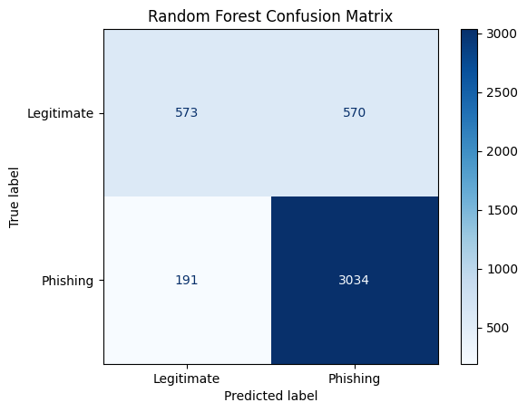

Cybersecurity · Machine Learning · Classroom Presentation
Machine Learning-Based
Phishing Website Detection
Phishing pages look almost identical to the real thing. This project asks a narrow, practical question: can a model tell a phishing website from a legitimate one using nothing but the shape of its URL? Two classifiers were trained and compared on 100,077 web addresses — and the best one, a Random Forest, reached 82.58% accuracy.
01 · Introduction
What is a phishing website?
The attack
Phishing is a social-engineering attack in which a criminal sends a link to a fake website that imitates a trusted one — a bank, a university login page, a payment service. The victim types their username, password, or card number into a page controlled by the attacker.
Phishing is one of the most common entry points for cyber attacks, and it works because the fake page is visually indistinguishable from the original. What usually gives it away is not how it looks — it is the address in the browser bar.
secure-paypal.verify-login.com, use
misleading characters such as @, and sit behind unusually deep paths.
Those are measurable, countable properties.
This project
The goal is to test whether machine learning can detect phishing from numerical URL characteristics alone — without reading the page content, without a browser, and without calling any external service.
- Load the Kaggle Web Page Phishing Dataset (100,077 rows).
- Clean it: remove duplicates and check for conflicting labels.
- Turn every URL into 19 numeric features (length, dots, hyphens, slashes…).
- Train a Decision Tree and a Random Forest.
- Compare accuracy, precision, recall and confusion matrices.
- Analyse which features the model trusts most.
- Discuss the security implications of the mistakes the model makes.
Tools: Python, Google Colab, Pandas, Scikit-learn, Matplotlib.
02 · The data
Dataset overview
Source: Web Page Phishing Dataset (Kaggle). Every row is a URL
reduced to 19 counts, labelled 0 (legitimate) or 1 (phishing).
The original file contains no missing values, but it contains a great many duplicates.
Key statistics
Class balance before and after cleaning
After removing duplicates the remaining 21,891 rows are 15,872 phishing and 6,019 legitimate — so the modelling data is dominated by phishing pages (72.6% of the training rows).
Average URL length
Phishing URLs in this dataset are almost 3× longer than legitimate ones (66.49 vs 23.59 characters).
Average number of slashes
Phishing URLs average 2.62 slashes against 0.29 for legitimate ones — the single strongest signal in the data.
Train / test split
The cleaned data was split roughly 80/20 with
GroupShuffleSplit(random_state=42), grouping rows with
identical feature values so no duplicate feature pattern could leak into
both sets.
Shared feature groups between train and test: 0. The test set is 73.8% phishing — an important number when reading the accuracy results below.
03 · Results
Model dashboard
Both models were trained with the same split and evaluated on the same 4,368 unseen test URLs. All figures below are the executed outputs of the notebook.
Decision Tree
Baseline model81.41%
accuracy on the test set
- Configuration
max_depth=10, random_state=42 - Phishing recall0.89
- Legitimate recall0.60
- Correct / 4,3683,556
One tree — fast and easy to explain, but it learns a single set of rules and misses subtle patterns.
Random Forest
Best model82.58%
accuracy on the test set
- Configuration
n_estimators=100, max_depth=10, random_state=42 - Phishing recall0.94
- Legitimate recall0.50
- Correct / 4,3683,607
100 trees voting together — better overall accuracy and much better at catching phishing, at the cost of flagging more legitimate sites.
Accuracy side by side
The third bar is an honest reference line: a model that simply answers "phishing" for every URL would score 73.83% on this test set, because 73.8% of the test rows are phishing. Both real models beat it, but the gap is smaller than the headline accuracy suggests — which is exactly why precision and recall matter.
Precision, recall & F1
Full classification report
Confusion matrix — Decision Tree

Confusion matrix — Random Forest

Matrix counts were produced by export_model.py from models that reproduce the
notebook's accuracies exactly (0.8141025641025641 and 0.8257783882783882), because the
notebook prints precision and recall rounded to two decimals rather than the raw counts.
The original chart images are shown alongside for comparison.
04 · Explainability
Which URL features matter?
Two different views of "importance". Correlation measures a straight-line relationship between one feature and the label (cell 4 of the notebook). Feature importance measures how much the Random Forest actually relied on each feature when splitting its trees (cell 11).
Correlation with the phishing label
Only n_redirection is negative (−0.051); everything
else pushes towards phishing.
Random Forest feature importance (top 10)
Three features — slashes, length and hyphens — account for 63.5% of the forest's decision making.
All 19 features, ranked by importance
| # | Feature | What it counts | Importance | Relative weight | Correlation |
|---|
Importance values come from random_forest.feature_importances_
and sum to 100%. Correlations are Pearson coefficients against the phishing label.
The dataset's original spellings (n_hypens, n_hastag) are preserved.
Interpretation
Slashes + length = structure
A legitimate site usually sends you to a short homepage. A phishing page hides a
long, deep path such as /accounts/verify/session/update. That single idea
explains why n_slash (0.305 importance, 0.611 correlation) and
url_length (0.194, 0.430) dominate.
Hyphens + dots = impostor domains
n_hypens (0.136) and n_dots (0.073) capture the classic
look-alike domain, where attackers stuff words and subdomains in front of a real brand
name to make the address read correctly while pointing somewhere else.
Query characters = credential harvesting
n_equal (0.091), n_and (0.031) and
n_questionmark (0.020) rise when a URL carries parameters — typical of
pages that bounce your input through a script.
Redirection is almost uninformative
n_redirection has importance 0.047 but a slightly negative
correlation (−0.051). The model uses it in a few splits, yet it does not reliably point
in either direction — a good example of why correlation alone is not feature importance.
Original notebook charts
The exact figures produced when the notebook was executed — shown so the website and the notebook can be checked against each other.
05 · Interactive
URL Analyzer
Enter any web address and click Analyze URL. The page counts the same
19 features your dataset uses, then runs the real trained model — the
identical Decision Tree and Random Forest produced by export_model.py from
your notebook's pipeline — entirely inside your browser.
The URL is converted into 19 numbers: length, dots, hyphens, slashes, query characters…
The 19 numbers are passed to the exported forest, in the exact column order used for training.
All 100 trees walk down to a leaf; their probabilities are averaged to produce the verdict.
Your URL as 19 numbers
This table updates as soon as you submit a URL. These are simple string counts — no prediction is involved at this stage.
| Column name | Meaning | Value |
|---|---|---|
| No URL analysed yet. | ||
python export_model.py, which re-executes your notebook's
training code and refuses to export unless it reproduces 81.41% and 82.58% exactly.
06 · When the model is wrong
False positives, false negatives & why they matter
False positive = legitimate site called phishing
570 of 1,143 legitimate test URLs (49.9%)
The Random Forest blocked 570 perfectly safe URLs. The Decision Tree blocked 461 (40.3%).
- The user is stopped from reaching a site they trust.
- In a company, repeated false alarms train people to ignore warnings — including the real ones.
- Cost: user frustration, support tickets, loss of trust in the tool.
Random Forest — precision 0.75 for the legitimate class: when it says "legitimate" it is right three times in four.
False negative = phishing site called legitimate
191 of 3,225 phishing test URLs (5.9%)
The Random Forest let 191 real phishing pages through. The Decision Tree let through 351 (10.9%).
- The victim reaches the fake page and may enter real credentials.
- This is the error with direct financial and personal-data consequences.
- Cost: account takeover, fraud, reputational damage, compliance exposure.
This is what "94% recall on phishing" means in practice: roughly 6 phishing sites in 100 still get through.
The trade-off, in one picture
| Model | False positives (legit blocked) |
False negatives (phishing missed) |
Total wrong | Character |
|---|---|---|---|---|
| Decision Tree | 461 (40.3%) | 351 (10.9%) | 812 | Balanced, misses more attacks |
| Random Forest | 570 (49.9%) | 191 (5.9%) | 761 | Aggressive, catches more attacks |
You cannot have both numbers at zero. Tighten the rules and you block safe sites; loosen them and attackers slip through. Choosing where to sit on that curve is a security policy decision, not just an accuracy number — an email gateway in front of executives may prefer the aggressive model, while a browser extension for the general public may prefer the balanced one.
Cybersecurity implications
- URL-only detection is cheap and fast. It needs no page download, no JavaScript execution and no screenshot — a link can be scored before a browser ever renders it.
- It is also narrow. A perfectly normal-looking URL can host a credential-harvesting page, and an odd-looking URL can be a legitimate tracking link.
- Attackers adapt. URL shorteners, free subdomains and brand-new domains can be crafted to look statistically ordinary. Static features lose value once attackers know which ones are watched.
- Defence in depth is required. Real phishing defence combines URL analysis with TLS certificate checks, domain age, page-content analysis, sender authentication (SPF/DKIM/DMARC), and — most importantly — user awareness.
Where this fits in a real defence
The project's own conclusion: URL-based machine learning can support phishing detection, but it should never be the only protection.
07 · Honest self-assessment
Limitations of this project
A 10–15 minute presentation should be as clear about what the project cannot do as about what it can. These are the constraints that matter most.
Limitations of the data
- Only numeric URL counts. The dataset has no page content, no screenshots, no TLS certificate details, no domain registration age and no traffic signals — all of which real anti-phishing systems use.
- Massive duplication. 78,186 of 100,077 rows (78%) were exact duplicates. Removing them was correct, but it shrank the usable data to 21,891 rows.
- Conflicting labels. 1,913 identical feature combinations carry both labels, so a perfect score on this data is impossible — some rows are genuinely ambiguous when only counts are available.
- Class imbalance. After cleaning, 72.6% of rows are phishing. Accuracy is therefore inflated: answering "phishing" every time already gives 73.83% on the test set.
- One source. A single Kaggle dataset of unknown collection window; results may not transfer to today's URLs.
Limitations of the method
- One split, no cross-validation. Accuracy comes from a single
80/20 split (
random_state=42), so there is no confidence interval. A different split could move the numbers by a point or two. - Small gap between models. 82.58% vs 81.41% is 1.17 percentage points on 4,368 URLs (51 more correct). That is suggestive, but it has not been tested for statistical significance.
- Still ~1 in 6 predictions wrong. 761 of 4,368 test URLs were misclassified by the best model.
- Fixed hyper-parameters.
max_depth=10andn_estimators=100were chosen by hand; no grid search or tuning was performed, so neither model is necessarily optimal. - Unsupervised feature construction. The 19 features are hand-made counts; a modern approach might learn representations directly from raw URLs.
Limitations of this website's analyzer
- Feature extraction is a reconstruction. The dataset publishes only
the 19 counts — never the original URL strings — so the analyzer recreates them
from an entered URL. Two conventions were inferred from the data: the stored strings
appear to include the scheme (rows with
n_redirection = -1are about 10 characters shorter than the rest), andn_slashexcludes the two slashes inside://(which is what allows legitimate URLs to average just 0.29 slashes).n_redirectionis interpreted as "number of://markers minus one". For an ordinary URL both conventions agree; for unusual inputs the counts may differ slightly from how the original rows were generated. - The model inherits every bias above. 82.58% accuracy means roughly one URL in six receives the wrong label, and the Random Forest wrongly flags about half of all legitimate sites.
- Out-of-distribution inputs. Paste a URL far outside the training range (very long, unusual characters) and the model still answers — with a number that has little meaning. The probability shown is a vote among trees, not a guarantee.
- Educational use only. This is a course project. Do not rely on it to protect any real system; it is not a substitute for a maintained anti-phishing product.